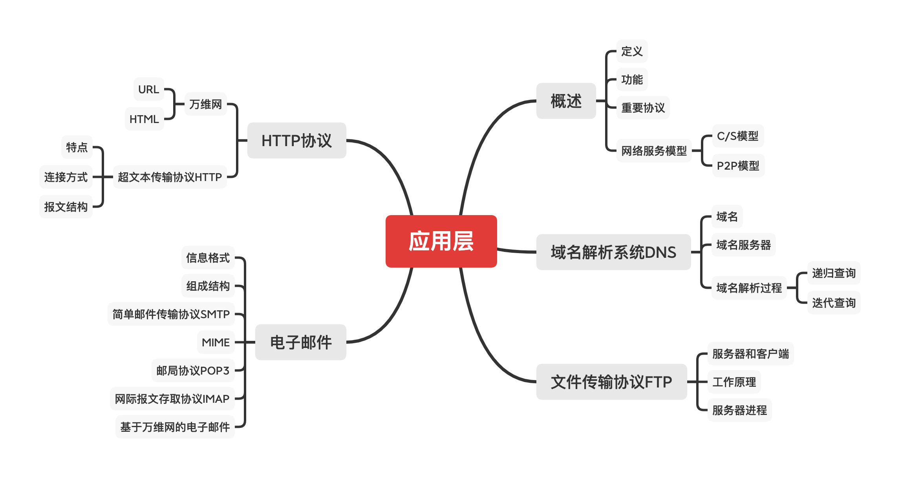
1 概述
应用层对应用程序的通信提供服务。
应用层协议定义：
- 应用进程交换的报文类型，请求还是响应？
- 各种报文类型的语法，如报文中的各个字段及其详细描述。
- 字段的语义，即包含在字段中的信息的含义。
- 进程何时、如何发送报文，以及对报文进行响应的规则。
应用层的功能：
- 文件传输、访问和管理
- 电子邮件
- 虚拟终端
- 查询服务和远程作业登录
应用层的重要协议：
- FTP
- SMTP、POP3
- HTTP
网络服务模型：
- 客户/服务器模型（C/S模型）
- P2P模型（Peer-to-Peer）
客户/服务器（C/S）模型：
- 服务器：提供计算机服务的设备。
- 永久提供服务。
- 永久性访问地址/域名。
- 客户机：请求计算服务的主机。
- 与服务器通信，使用服务器提供的服务。
- 间歇性接入网络。
- 可能使用动态IP地址。
- 不与其他客户机直接通信。
P2P模型：
- 不存在永远在线的服务器。
- 每个主机既可以提供服务，也可以请求服务。
- 任意端系统/节点之间可以直接通信。
- 节点间歇性接入网络。
- 节点可能改变IP地址。
- 可扩展性好。
- 网络健壮性好。
2 域名解析系统DNS
域名：

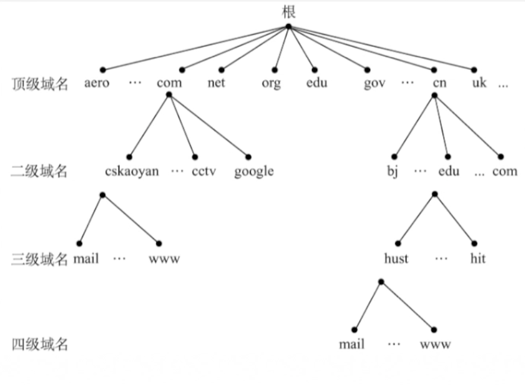
域名服务器（DNS服务器）：
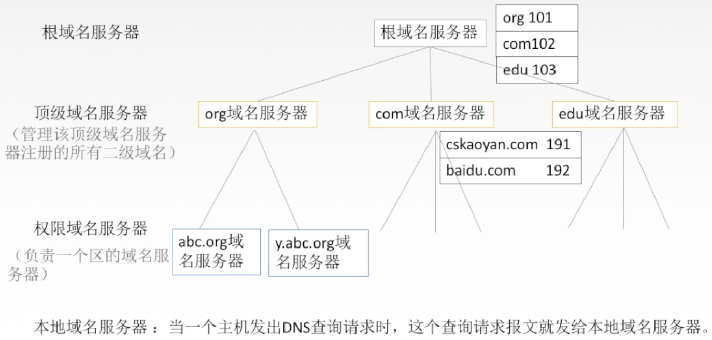
域名解析过程：
- 递归查询
- 迭代查询

3 文件传输协议FTP
FTP服务器和用户端：FTP是基于C/S模型的协议。
- 用户通过一个客户机程序连接至远程计算机上运行的服务器程序。
- 依照FTP协议提供服务，进行文件传送的计算机就是FTP服务器。
- 连接FTP服务器，遵循FTP协议与服务器传送的电脑就是FTP客户端。
FTP工作原理：
- 登录：FTP地址，用户名&密码（或者匿名登陆）
- FTP使用TCP实现可靠传输。
服务器进程：
- 1个主进程：建立连接。
- n个从属进程：控制与文件传输。
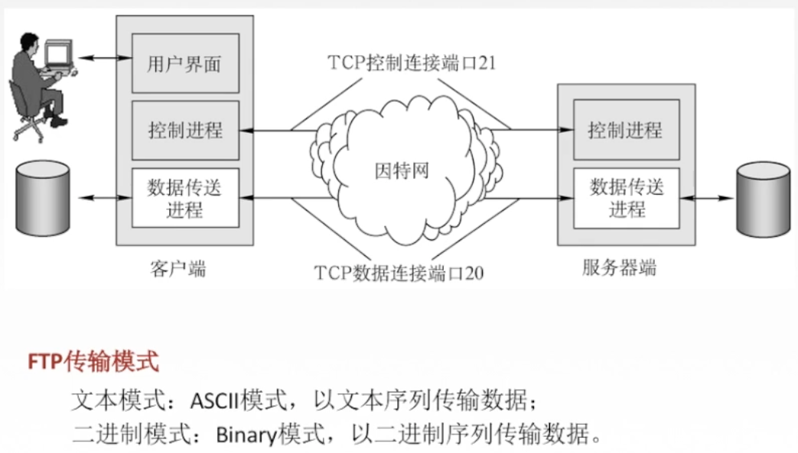
4 电子邮件
电子邮件的信息格式：
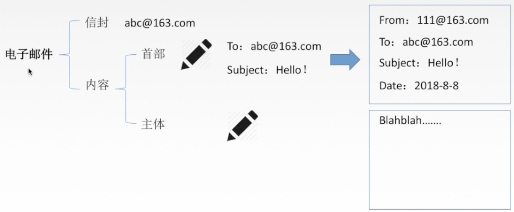
电子邮件系统组成结构：
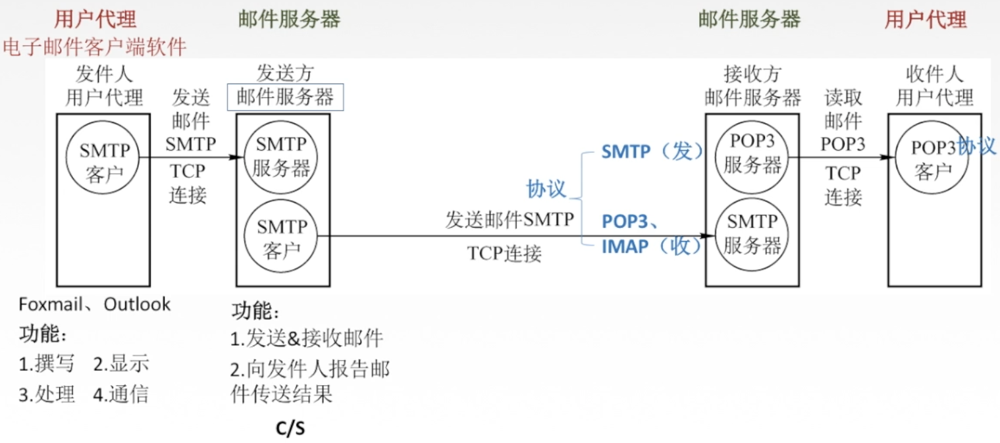
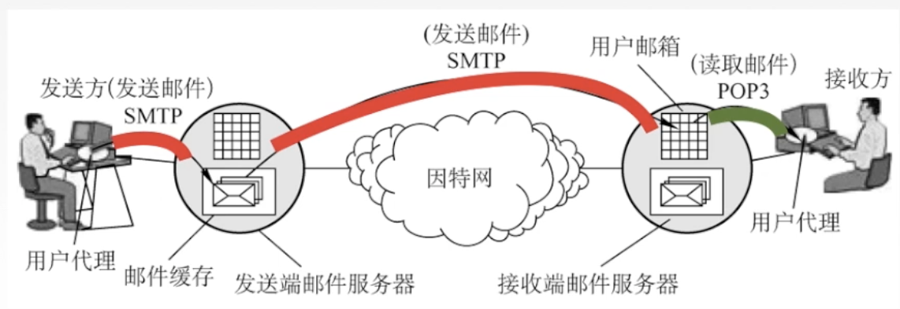
简单邮件传输协议SMTP：
- SMTP规定了在两个相互通信的SMTP进程之间如何交换信息。
- 负责发送邮件的SMTP进程就是SMTP客户，负责接收的进程是SMTP服务器。
- SMTP规定了14条命令（几个字母）和21钟应答信息（三位数字代码+简单文字说明）。
- 使用TCP连接，端口号25，C/S模型。
SMTP通信的三个阶段：连接建立，邮件传送，连接释放。
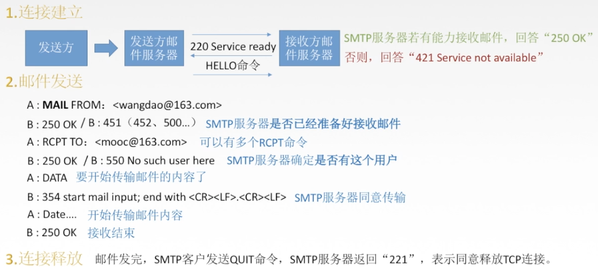
SMTP的缺点：
- SMTP不能传送可执行文件或者其他二进制对象。
- SMTP仅限于传送7位ASCII码，不能传送其他非英语国家的文字。
- SMTP服务器会拒绝超过一定长度的邮件。
通过因特网邮件扩充MIME：使电子邮件系统可以支持声音、图像、视频、多国家语言等等。
邮局协议POP3:
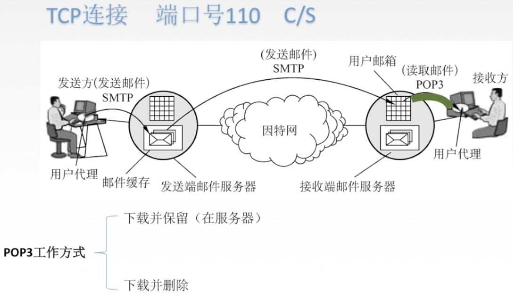
网际报文存取协议IMAP：
- 比POP复杂，当用户PC上的IMAP客户程序打开IMAP服务器的邮箱时，用户可以看到邮箱的首部，若用户需要打开某个邮件，该邮件才上传到用户的计算机上。
- IMAP可以让用户在不同的地方使用不同的计算机随时上网阅读处理邮件，还允许只读取邮件中的某一个部分。
基于万维网的电子邮件：
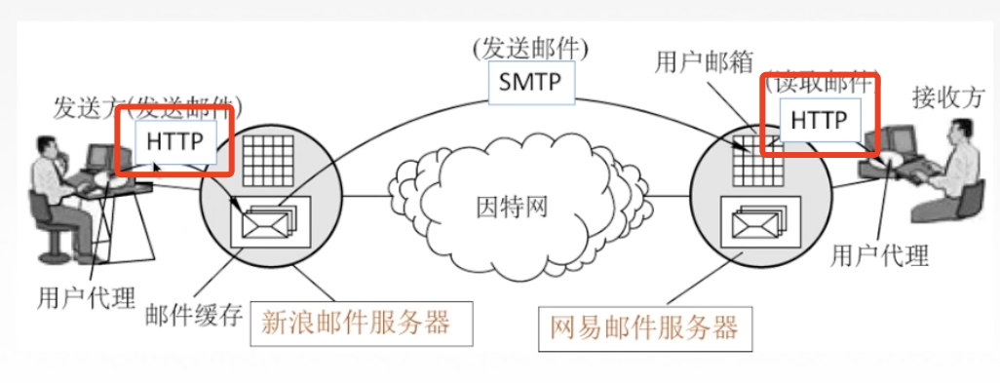
5 HTTP协议
万维网：World Wide Web，是一个大规模的、联机式的信息储藏所/资料空间，是无数个网络站点和网页的集合。使用统一资源定位符URL。
用户通过点击超链接获取资源，资源通过超文本传输协议HTTP传送给使用者。
万维网以客户/服务器方式工作，用户使用的浏览器是客户端，万维网文档所在的主机是服务器。
万维网使用超文本标记语言HTML。
超文本传输协议HTTP：定义了浏览器向万维网服务器请求万维网文档，以及服务器怎样把文档传送给浏览器。
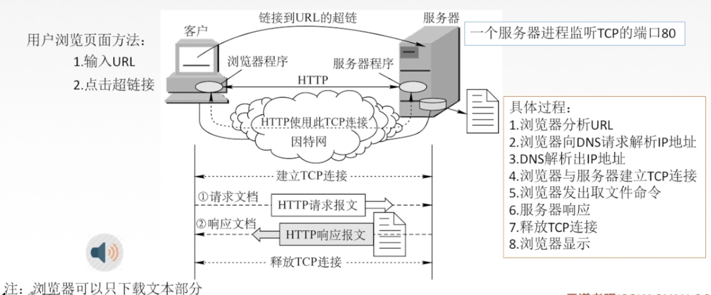
HTTP协议的特点：
- HTTP协议是无状态的。但是实际工作中，一些万维网想能够识别用户，所以使用Cookie，Cookie是存储在用户主机中的文本文件，记录一段时间内用户的访问记录。
- HTTP采用TCP作为运输层协议，但HTTP协议本身是无连接的（通信双方在交换HTTP报文之前不需要建立HTTP连接）。
HTTP连接方式：
- 持久连接（Keep-aive）
- 非流水线
- 流水线
- 非持久连接（Close）
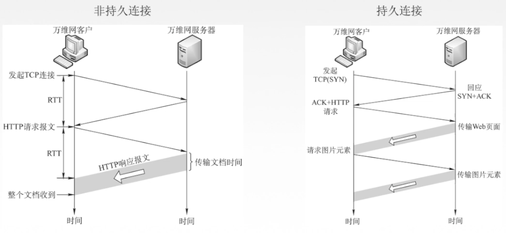
HTTP报文结构：
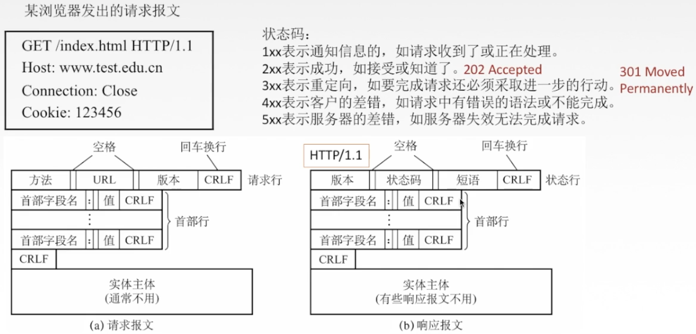
参考资料：
B站 2019 王道考研 计算机网络